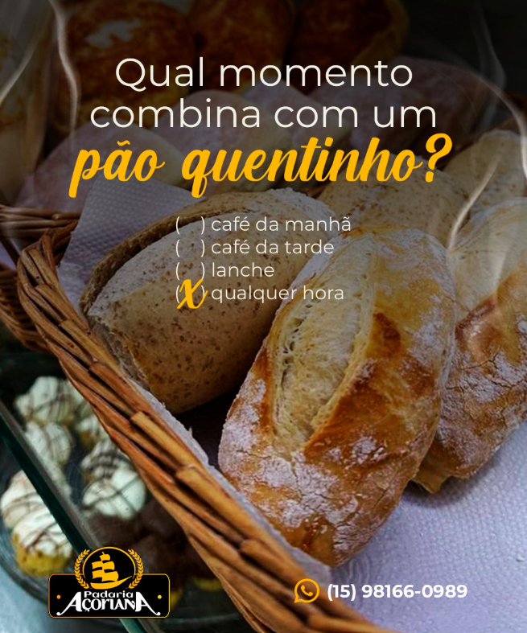
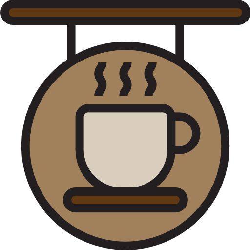
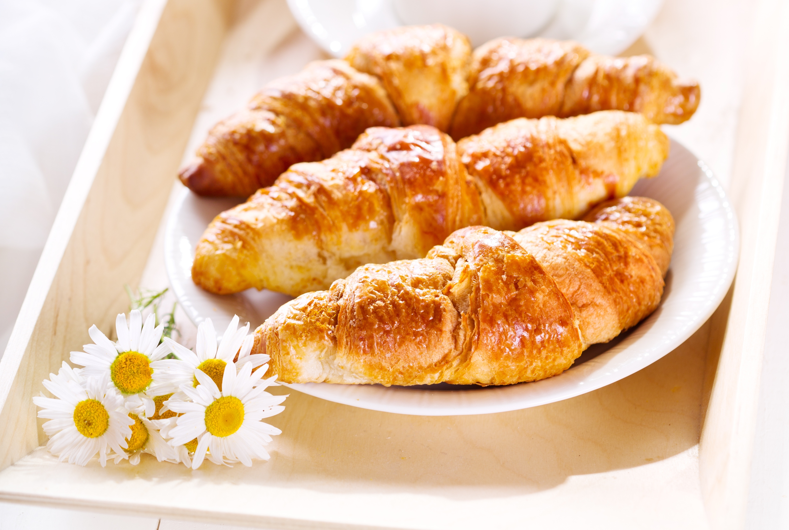
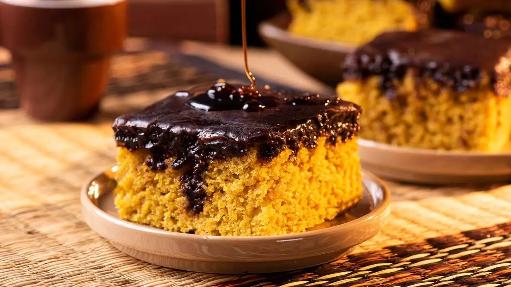
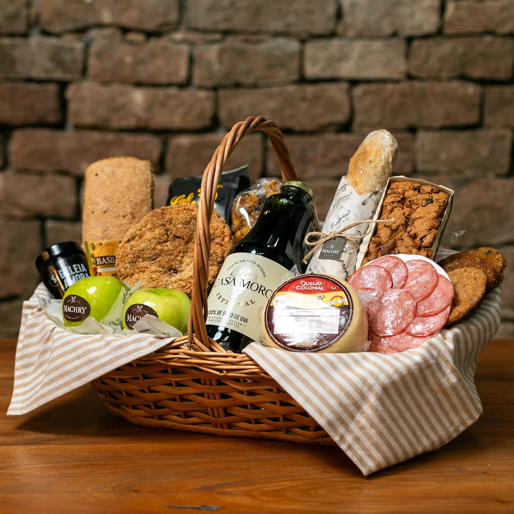
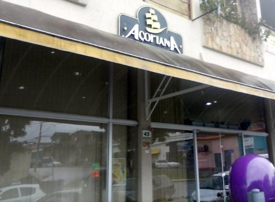

Fermentação 24h
Fermentação 24h
Pão Rústico de Fermentação Natural
Casca crocante dourada, miolo incrivelmente aerado e aroma marcante.
Unidade (aprox. 500g)
R$ 24,90
Descubra nossa linha artesanal de pães especiais de fermentação natural, confeitaria fina, salgados assados na hora e uma conveniência completa para você.

Navegue por nossas seleções preparadas diariamente com ingredientes nobres.
Sourdough, francês tradicional, ciabatta e baguetes de fermentação natural.
Ver opções →Croissants amanteigados, empadas nobres, quiches e folhados gourmet.
Ver opções →
Cafés especiais moídos na hora, sucos naturais e laticínios frescos.
Ver opções →Vinhos, queijos nobres, antepastos artesanais e itens de mercearia premium.
Ver opções →Uma amostra dos pães especiais e delícias que você pode encomendar com facilidade.
Fermentação 24h
Casca crocante dourada, miolo incrivelmente aerado e aroma marcante.

Pura ManteigaMassa folhada francesa pura manteiga, textura levíssima e crocância inigualável.

Chocolate BelgaExtremamente fofinho, coberto com camadas generosas de ganache de chocolate.

Kit EspecialSortimento nobre com baguetes, mini croissants, pães rústicos e queijos artesanais.
A Açoriana Conveniência e Pães Especiais nasceu do compromisso de unir o carinho da panificação artesanal à conveniência que o ritmo do cotidiano exige. Cada receita honra os métodos clássicos, selecionando farinhas nobres e respeitando o tempo natural de cada fermentação.
Mais do que uma padaria, somos o ponto de encontro de quem aprecia o frescor matinal, o conforto acolhedor e momentos de sabor inesquecíveis, seja para levar um café rápido ou selecionar delícias finas para a ceia em família.
